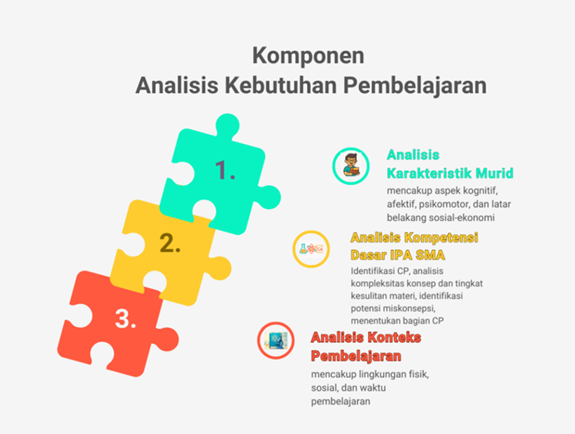
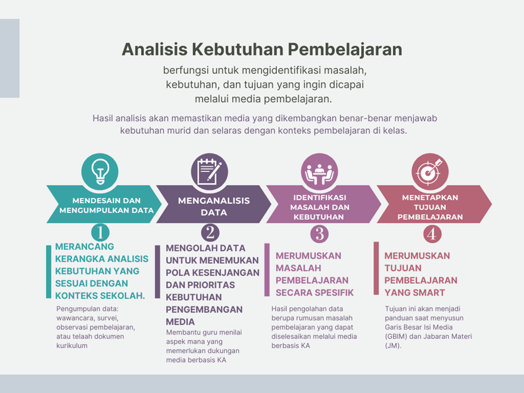

1. Pengantar
Selamat datang di Modul 4 Kegiatan Belajar 1!
Bagian ini akan mengajak Bapak Ibu memasuki tahap awal yang menentukan arah seluruh proses pengembangan. Apakah itu? Ya, Anda akan merumuskan cetak biru media yang cerdas, adaptif, dan relevan dengan konteks pembelajaran IPA di SMA.
Tahap perancangan menjadi fondasi penting dalam pengembangan media. Perancangan yang baik memastikan ide tidak hanya tampak menarik, tetapi juga berangkat dari kebutuhan nyata di kelas serta mendukung pencapaian tujuan pembelajaran. Pembelajaran IPA di tingkat SMA sering kali menuntut kejelasan konsep dan keterlibatan aktif murid, sehingga integrasi kecerdasan artifisial perlu dirancang secara strategis untuk menjawab tantangan tersebut. Pendekatan yang tepat dapat menghasilkan fitur-fitur pembelajaran yang interaktif, misalnya simulasi berbasis data, sistem evaluasi otomatis, atau visualisasi konsep sains yang kompleks.
Kegiatan belajar 1 mengajak Bapak/Ibu menelusuri langkah-langkah sistematis dalam merancang ide media pembelajaran berbasis KA. Proses dimulai dari analisis kebutuhan pembelajaran untuk mengenali kesenjangan kompetensi, masalah belajar, dan karakteristik murid. Selanjutnya, Bapak/Ibu akan menentukan bentuk media yang paling sesuai dengan konteks pembelajaran IPA, apakah berupa aplikasi, modul interaktif, atau platform digital lainnya. Tahap akhir difokuskan pada penyusunan dan penyempurnaan Garis Besar Isi Media (GBIM) dan Jabaran Materi (JM) sebagai rancangan terstruktur yang menjadi dasar bagi proses produksi prototipe pada kegiatan belajar berikutnya.
2. Komponen Analisis Kebutuhan dalam Pembelajaran IPA
Tahapan awal dalam pengembangan media pembelajaran berbasis kecerdasan artifisial (KA) dimulai dengan melakukan analisis kebutuhan pembelajaran. Pada tahap ini, guru berperan sebagai desainer pembelajaran yang menelaah secara sistematis berbagai aspek yang memengaruhi efektivitas media. Model ADDIE (Analysis, Design, Development, Implementation, Evaluation) digunakan sebagai kerangka kerja utama. Model ini terbukti efektif dalam mengarahkan proses pengembangan media instruksional secara terstruktur dan berkelanjutan (Branch, 2009; Aldoobie, 2015).
Analisis kebutuhan berfungsi untuk mengidentifikasi masalah, kebutuhan, dan tujuan yang ingin dicapai melalui media. Hasil analisis akan memastikan media yang dikembangkan benar-benar menjawab kebutuhan murid dan selaras dengan konteks pembelajaran di kelas. Dalam konteks pengembangan media berbasis KA untuk pembelajaran IPA, proses ini membantu guru untuk
- mengenali masalah pembelajaran yang spesifik,
- menentukan kebutuhan murid secara akurat,
- merumuskan tujuan pembelajaran yang jelas dan terukur, serta
- memastikan media yang dikembangkan tepat sasaran dan efisien
Dick, Carey, dan Carey (2015) menegaskan bahwa analisis kebutuhan merupakan fondasi seluruh proses desain instruksional. Tanpa analisis yang menyeluruh, media yang dihasilkan berisiko tidak relevan dengan kondisi murid atau bahkan menimbulkan kebingungan dalam pembelajaran.
Komponen Analisis Kebutuhan dalam Pembelajaran IPA
Analisis kebutuhan dalam konteks pengembangan media berbasis KA mencakup tiga dimensi utama: analisis karakteristik murid, analisis kompetensi dasar, dan analisis konteks pembelajaran.
Gambar 1. Infografis Komponen Analisis Kebutuhan Pembelajaran
Penjelasan untuk setiap dimensi disajikan pada bagian berikut:
a. Analisis Karakteristik Murid
Pemahaman yang mendalam tentang karakteristik murid menjadi kunci utama dalam menentukan bentuk media dan fitur KA yang akan digunakan. Analisis ini mencakup:
-
-
- Aspek kognitif, seperti tingkat perkembangan berpikir, gaya belajar, kemampuan analitis, serta pengetahuan awal tentang konsep IPA.
- Aspek afektif, seperti motivasi belajar, minat terhadap sains, sikap terhadap teknologi, dan rasa percaya diri dalam mempelajari IPA.
- Aspek psikomotor, yang mencakup keterampilan menggunakan perangkat digital dan kemampuan literasi teknologi.
- Latar belakang sosial-ekonomi, seperti ketersediaan perangkat, akses internet, dan dukungan lingkungan belajar di rumah.
-
Hasil analisis ini membantu menentukan seberapa jauh media berbasis KA dapat digunakan secara efektif oleh murid dengan karakteristik yang beragam.
b. Analisis Kompetensi Dasar IPA SMA
Tahapan ini menuntun guru untuk menelusuri Kompetensi Dasar (KD) yang hendak dicapai melalui media berbasis KA. Dalam fase ini, langkah-langkah yang dilakukan mencakup:
-
-
- mengidentifikasi KD spesifik dari kurikulum IPA (fisika, kimia, biologi) yang menjadi fokus pembelajaran,
- menganalisis kompleksitas konsep serta tingkat kesulitan materi,
- mengidentifikasi potensi miskonsepsi murid terhadap konsep IPA tertentu, dan
- menentukan bagian KD yang paling efektif difasilitasi oleh fitur kecerdasan artifisial.
-
Analisis ini membantu guru memilih strategi dan jenis media yang paling tepat, misalnya menggunakan AI untuk simulasi eksperimen fisika atau visualisasi proses biologis.
c. Analisis Konteks Pembelajaran
Konteks tempat media akan digunakan menjadi pertimbangan penting agar media berbasis KA dapat diterapkan secara realistis dan efektif. Analisis konteks mencakup:
-
-
- Lingkungan fisik, seperti ketersediaan laboratorium, perangkat komputer, jaringan internet, dan fasilitas proyeksi.
- Lingkungan sosial, yang meliputi budaya belajar di sekolah, dukungan rekan sejawat, serta kebijakan sekolah terhadap pemanfaatan teknologi digital.
- Waktu pembelajaran, termasuk alokasi waktu dalam kurikulum, fleksibilitas jadwal, dan peluang untuk pembelajaran di luar kelas.
-
Proses Pelaksanaan Analisis Kebutuhan
Proses analisis kebutuhan dalam modul ini dilakukan melalui beberapa langkah yang sistematis, seperti dapat dilihat di Gambar 2.
Gambar 2. Diagram Langkah Melakukan Analisis Kebutuhan Pembelajaran
Adapun penjelasan dari setiap langkah analisis kebutuhan pembelajaran sebagai berikut:
- Menyusun desain analisis kebutuhan dan pengumpulan data
Guru merancang kerangka analisis kebutuhan yang sesuai dengan konteks sekolah. Pengumpulan data dapat dilakukan melalui wawancara, survei, observasi pembelajaran, atau telaah dokumen kurikulum. - Menganalisis data hasil pengumpulan informasi
Data yang diperoleh kemudian diolah untuk menemukan pola, kesenjangan, serta prioritas kebutuhan pengembangan media. Analisis ini membantu guru menilai aspek mana yang memerlukan dukungan media berbasis KA. - Mengidentifikasi masalah dan kebutuhan pembelajaran
Hasil analisis digunakan untuk merumuskan masalah pembelajaran spesifik yang dapat diselesaikan melalui media berbasis KA, misalnya kesulitan memahami konsep abstrak atau keterbatasan aktivitas eksperimen. - Menetapkan tujuan pembelajaran berbasis KA
Tahapan terakhir adalah merumuskan tujuan pembelajaran yang SMART (Specific, Measurable, Achievable, Relevant, Time-bound) sebagai dasar pengembangan media. Tujuan ini akan menjadi panduan saat menyusun Garis Besar Isi Media (GBIM) dan Jabaran Materi (JM).
3. Pemilihan Bentuk Media
Tahapan berikutnya dalam perancangan media pembelajaran adalah menentukan bentuk media yang paling sesuai dengan kebutuhan, tujuan, dan konteks pembelajaran. Pemilihan media merupakan keputusan penting karena akan menentukan arah desain teknis dan strategi implementasi pada tahap produksi. Media yang tepat akan mempermudah murid dalam memahami konsep-konsep IPA yang abstrak dan menstimulasi mereka untuk berpikir kritis serta bereksperimen secara aktif.
Media pembelajaran yang efektif bukan hanya menarik secara visual, tetapi juga memiliki nilai pedagogis yang kuat. Media yang dirancang secara tepat akan membantu murid mengaitkan teori dengan fenomena nyata, memperjelas proses ilmiah, dan meningkatkan partisipasi dalam pembelajaran. Dalam konteks integrasi kecerdasan artifisial (KA), guru perlu mempertimbangkan sejauh mana teknologi tersebut benar-benar menambah nilai bagi pembelajaran, bukan sekadar menjadi hiasan teknologi. Contohnya, penggunaan AI simulation untuk eksperimen virtual atau AI chatbot untuk bimbingan belajar mandiri.
Pemilihan media pembelajaran harus didasarkan pada analisis yang dilakukan secara komprehensif terhadap beberapa faktor utama, yang meliputi: karakteristik materi, tujuan pembelajaran, taraf berpikir dan karakteristik murid, kondisi sarana prasarana, serta kesesuaian penggunaan kecerdasan artifisial. Tabel berikut mendeskripsikan kriteria yang dibutuhkan oleh masing-masing faktor.
Tabel 2. Faktor Pertimbangan dan Kriteria dalam Pemilihan Bentuk Media
| Pertimbangan | Deskripsi Kriteria |
| Karakteristik Materi | Pilih media yang mampu merepresentasikan konsep IPA. Untuk materi abstrak (misalnya, struktur atom, medan magnet), media visual/audio-visual seperti simulasi interaktif atau animasi 3D sangat disarankan. Untuk materi yang memerlukan keterampilan proses atau konsep konkret (misalnya, pengamatan ekosistem, percobaan kimia), media riil (alat peraga, lingkungan sekitar) atau video praktikum lebih sesuai (Sadiman et al., 2014; Miftah et al., 2022). |
| Tujuan Pembelajaran | Media harus relevan dan efektif untuk mencapai tujuan spesifik (kognitif, psikomotorik, afektif) yang telah ditetapkan. Misalnya, jika tujuannya adalah melatih keterampilan analisis data, media berupa spreadsheet atau perangkat lunak pengolah data lebih tepat daripada poster statis (Sadiman, 2014). |
| Taraf Berpikir dan Karakteristik Murid | Media harus disesuaikan dengan tingkat perkembangan kognitif, gaya belajar, dan minat murid SMA. Media harus mampu membangkitkan motivasi dan mendorong keaktifan belajar (Prastya, 2016). |
| Kondisi Sarana Prasarana | Pertimbangkan ketersediaan media dan infrastruktur pendukung (Action Criterion: Access, Cost, Technology). Jangan memilih media berbasis teknologi tinggi jika listrik, internet, atau perangkat keras (proyektor/komputer) tidak memadai. Media sederhana seperti alat peraga buatan sendiri dari barang bekas bisa lebih efektif (Prastya, 2016). |
| Kesesuaian Penggunaan Teknologi (KA) | Media berbasis TIK harus diintegrasikan secara sistematis dan tepat sasaran untuk meningkatkan motivasi dan hasil belajar, bukan sekadar pelengkap. Pemanfaatan TIK harus mampu menghadirkan pengalaman belajar yang tidak bisa didapatkan dengan media konvensional, seperti virtual lab atau Augmented Reality (AR) (Prastya, 2016; Miftah & Rokhman, 2022). |
4. Penyempurnaan GBIM dan JM
Tahap berikutnya adalah penyempurnaan Garis Besar Isi Media (GBIM) dan Jabaran Materi (JM). GBIM dan JM merupakan dua dokumen fundamental dalam proses desain instruksional yang sering mengalami iterasi dan penyempurnaan.
GBIM berfungsi sebagai kerangka awal yang memetakan alur isi dan tampilan media, sementara JM memerinci konten yang akan disajikan. Bapak/Ibu akan berlatih menyempurnakan GBIM dan JM berdasarkan hasil analisis kebutuhan serta keputusan pemilihan bentuk media, sehingga rancangan yang dihasilkan menjadi lebih sistematis, terarah, dan siap masuk ke tahap produksi prototipe. Contoh GBIM dan JM dapat dilihat pada lampiran.